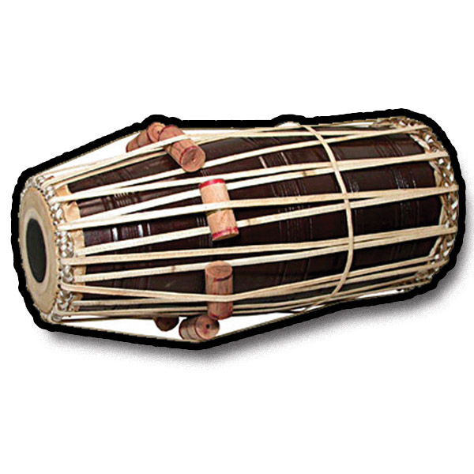
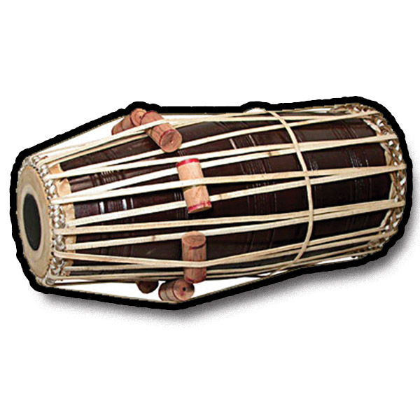

Subject


 


Tabala
-
Shriya Kulkarni got “Tabala Visharad” degree in 1st class also she is 1st student of vidyalaya who got degree exam held on April-May 2013
Shriya Kulkarni performed in program of “Saam Marathi Channel” on 21th August 2011
Shriya Kulkarni got 3rd price in competition arranged by shrirang kala niketan Talegaon Dabhade.
Naveli Deshpande performed in “VA RE VA” program of “Sahyadri Channel” on 14th February 2009
Kumar Pratham Yadav performed in “VA RE VA” program of “Sahyadri Channel” on 19 January 2009
Shriya Ganesh Kulkarni got first price for playing Tabala Datta Gayan Samaj Barshri.
Aniket Pujari got 4th rank in taal competition arranged by “Taal Sadhana” Solapur
Classical Vocal
Abhishek Pujari performed Sugam Gayan on “Saam Marathi” 18 September 2011
Utkranti Masal has passed preliminary Exam in 1st rank held in April – May 2010
Utkranti Masal performed in Classical vocal program of Solapur Radio Station.
Harmonium
Sumedh Dabir passed preliminary Exam in harmonium held in April – May 2014
Satar
Gayatri Kulkarni passed preliminary Exam.
Shravani Hirfode got 1st Rank in Exam.
Shravani Hirfode got 1st Rank in Exam.